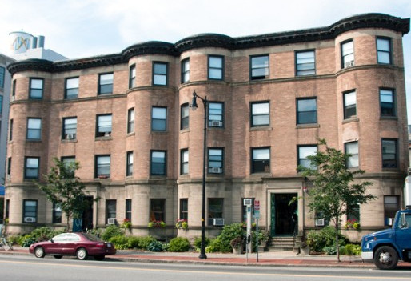
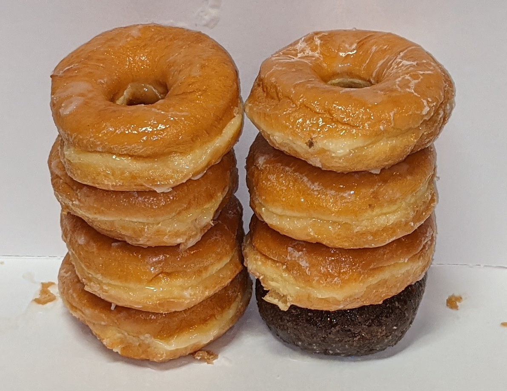
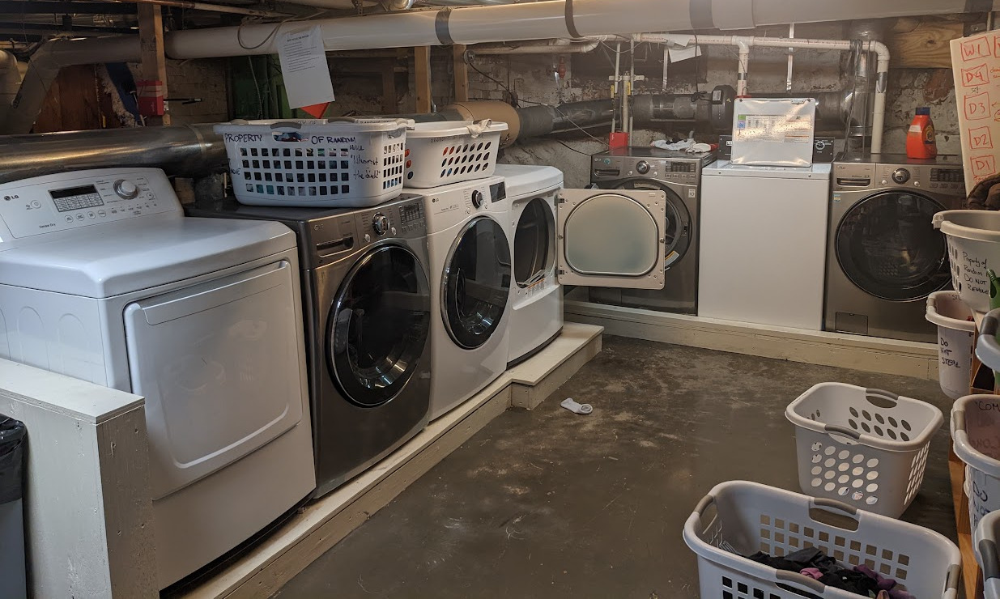
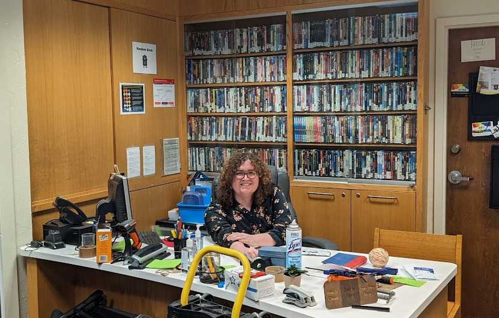
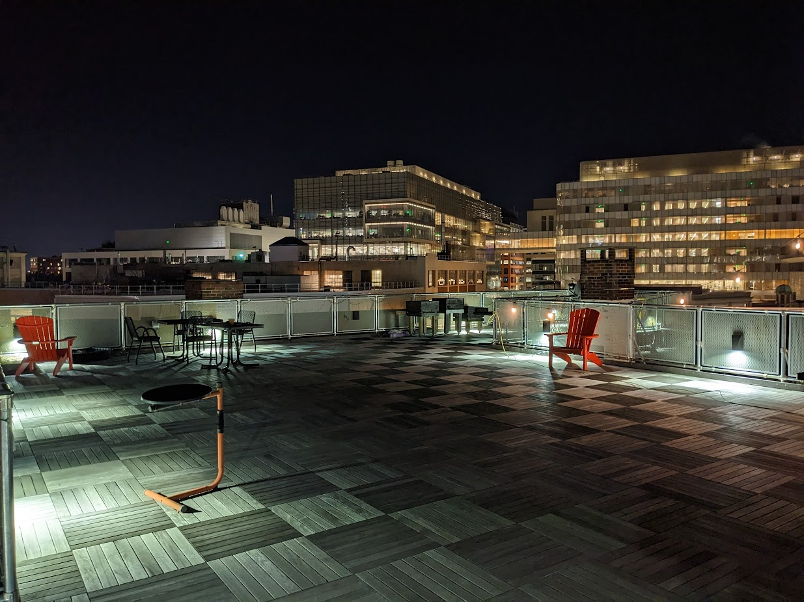
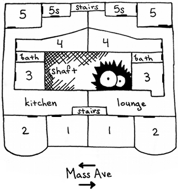

Random Hall was dedicated in 1968 on Leap Year's Day
And is now one of two undergraduate dorms on the northern side of the MIT campus. Our location near Central Square makes shopping and traveling through the entire Cambridge-Boston area extremely convenient. The MBTA Red Line and local H-mart are just a few blocks away, and A-plus market, open 24/7, is right next to us.


Random is divided into eight "floors"
Each taking up half of a physical floor of the dorm. Think two stacks of four donuts each — that'll give you the right mental picture. Each floor houses between 3 and 14 residents, has a complete kitchen with stove, microwave, dishwasher, and up to four refrigerators, and also has two private bathrooms and a lounge. Seven of the floors are co-ed, and the other is non-male.In the basement,
one can find a computer room, a workshop, a printer, a music practice room, a weight room, a game area with a punching bag and pool table, and the Alice in Wonderland Theater. Our three washers (Geela, Malseka, Maku) and four dryers (Alatelo, Krank, Akoro, Droog), which residents can all use for free, are also located there; their status can be checked online.


Our front desk
sorts mail, runs soda fridge, lends movies, checks out shop keys, and provides sewing machines and/or vacuums to the hole-y and dust-ridden.Our roof
is open for all residents. There we have a wooden roofdeck with tables and chairs. Perfect for meteor-gazing, movie-watching, boffer-fighting, or even tooling.


Our rooms
- One Rooms are singles in the front of the building, facing Mass Ave.
- Two Rooms are doubles next to the one rooms, also facing out to the street.
- Three Rooms are singles which look out onto the air and light shafts in the middle of the building.
- Four Rooms are singles divided into two halves by arches, and also look out on the shafts.
- Five Rooms are divided doubles with outside windows facing the back of the building. Each five room has a large half, typically occupied by an upperclassman, and a small half, typically occupied by a freshman.